Track 2.0: how I turned a dashboard full of charts into an answer to “what do we fix first?”
A redesign of the dashboards in a security product. I audited the first version, rebuilt it around real risk and designed the whole widget flow, from an empty screen to the details.
- Role
- Product Designer, UX audit
- Product
- Cybersecurity, B2B, web app
- Result
- First useful dashboard in under 10 seconds instead of about a minute; exploited vulnerabilities visible on the first screen; one click from a chart to the list of things to fix
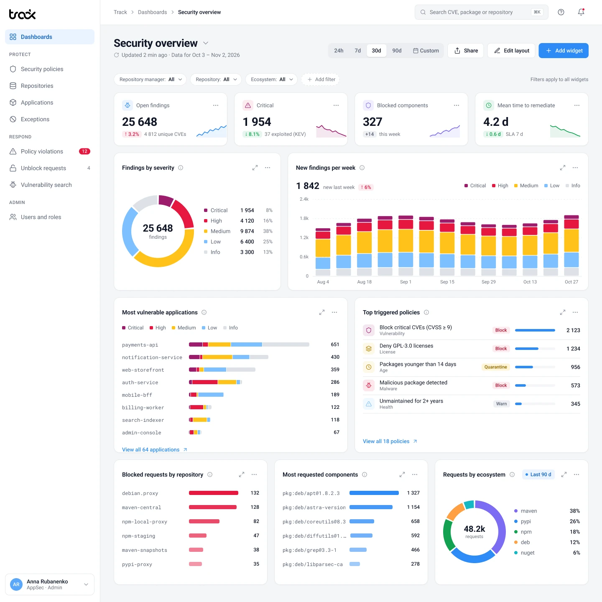
What Track is
Most of a modern app isn’t written by the team that ships it. It’s built from open-source libraries pulled from npm, Maven, PyPI and other registries, and any of them can bring in a known vulnerability, malicious code or a license the company isn’t allowed to use.
Track protects that supply chain. It checks every dependency, including the ones that come in indirectly, and works as a firewall in front of the company’s internal repositories: risky packages get blocked or quarantined before they reach a build. The dashboards are where the team sees how all of this is going.
Who uses it
- AppSec engineers triage vulnerabilities and decide what gets fixed first.
- DevOps and DevSecOps engineers look after the repositories and make sure a block doesn’t break someone’s build.
- Security leads watch policies, violations and fix times, and report to the business.
A few terms
- CVE: the public ID of a known vulnerability.
- Severity: how bad it is, from Critical down to Info.
- KEV: a public list of vulnerabilities attackers are already using. If something is on it, it should be fixed now.
- MTTR: how long it takes, on average, to fix a problem once it’s found.
What wasn’t working
The first version did its main job: each role could set up its own view in about a minute. But when I went through it the way an AppSec engineer would, a few things kept getting in the way.
- Lots of numbers, no priorities. The dashboard said there were 25,648 vulnerabilities, but not which ones mattered today.
- Every widget had its own filters. Two charts next to each other could cover different periods, so you couldn’t compare them.
- Blocks looked like incidents. A blocked package means the firewall did its job, yet it was shown in alarm red.
- Dead ends. The empty screen didn’t say where to start, and the expanded view was just a bigger chart with nothing to do next.
- No states. Loading, a failed data source and missing permissions weren’t designed, so the dashboard could look broken.
Goal
Keep the flexibility people liked, but make the dashboard answer “what do we fix first?” in a few seconds and take you straight to the fix.
01 · Overview
From statistics to priorities
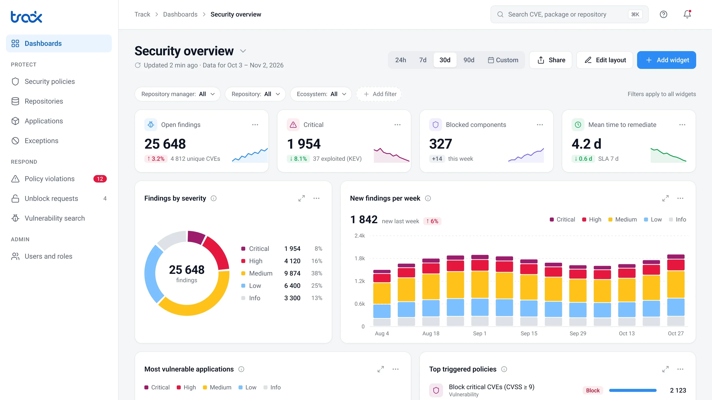
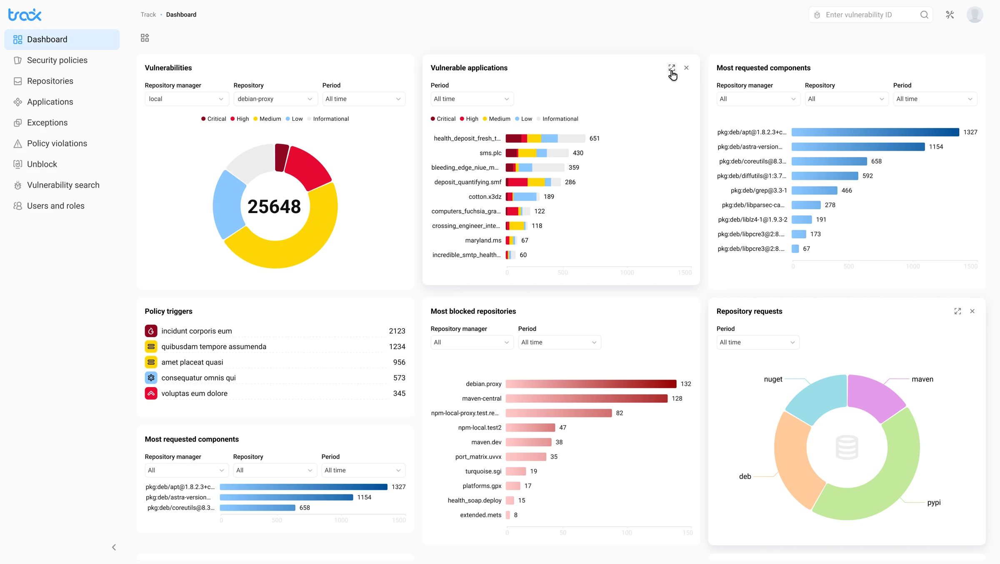
Before AfterOne period and one set of filters. I took the filters out of the widgets and put them above the dashboard, so every chart now talks about the same thing. If a widget really needs its own period, it says so with a visible label like “Last 90 d”.
A KPI row with the main questions. How many open findings there are, how many are critical, how many of those are already being exploited, and how fast the team fixes them compared to the SLA.
Blocks in a calm color. Red is only for things that need a reaction. More blocked packages isn’t an alarm, it’s the protection working.
Policies show what they do. Each one has a Block, Quarantine or Warn badge, because 2,000 warnings and 2,000 blocks are very different stories.
Severity that’s easy to tell apart. Critical is now plum so it doesn’t blend into High, and secondary text passes WCAG AA contrast.
02 · First run
An empty screen that gets you started
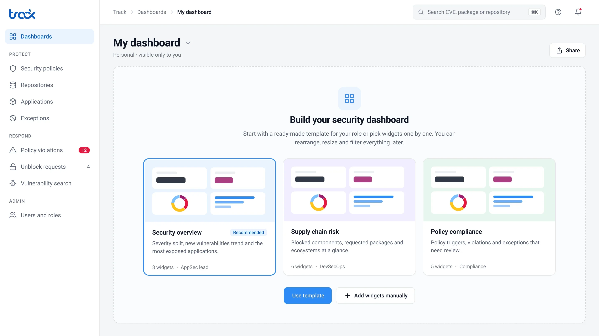
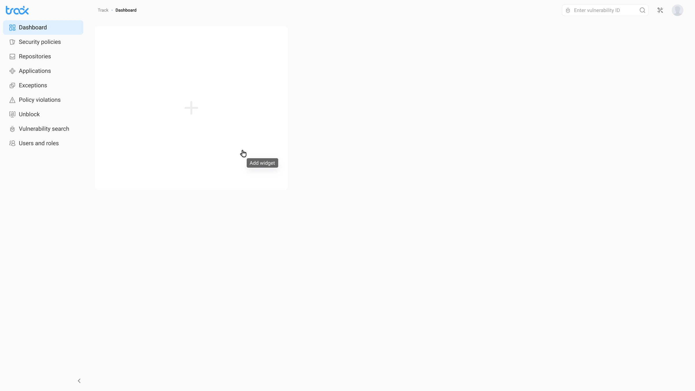
Before AfterInstead of a lonely “+”, there are three templates for the same three roles: Security overview for AppSec, Supply chain risk for DevSecOps and Policy compliance for security leads. One click gives you a dashboard that’s already useful, and you can still pick widgets by hand.
03 · Widget library
A choice that’s easy to find your way around
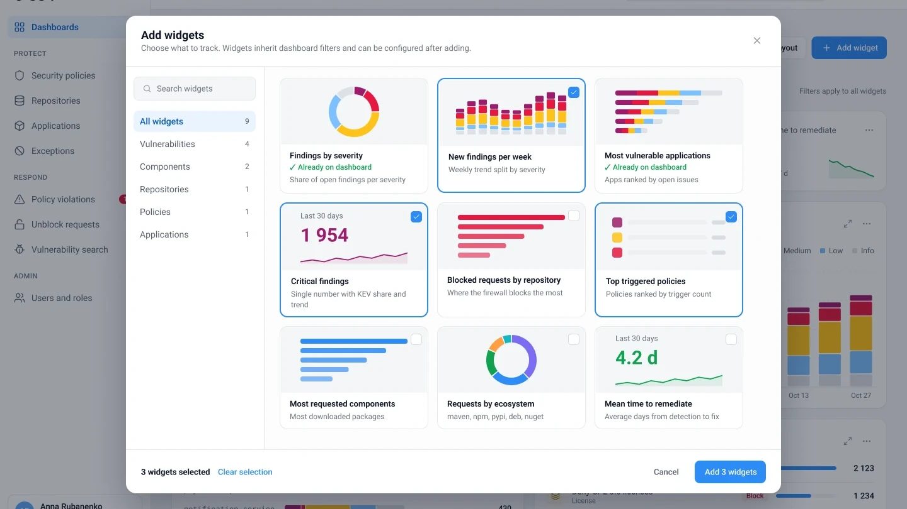
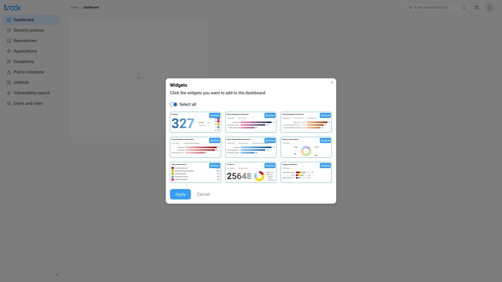
Before AfterCategories and search instead of one long grid, big previews with real data, a clear “Already on dashboard” mark and a counter of what you’ve picked. Widgets have the same names here and on the dashboard, so you recognise what you added.
04 · Details
From a chart straight to action
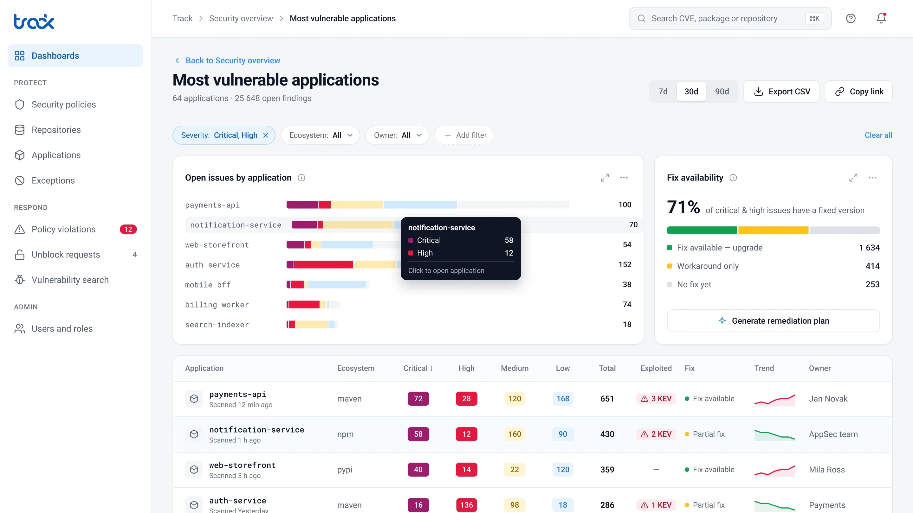
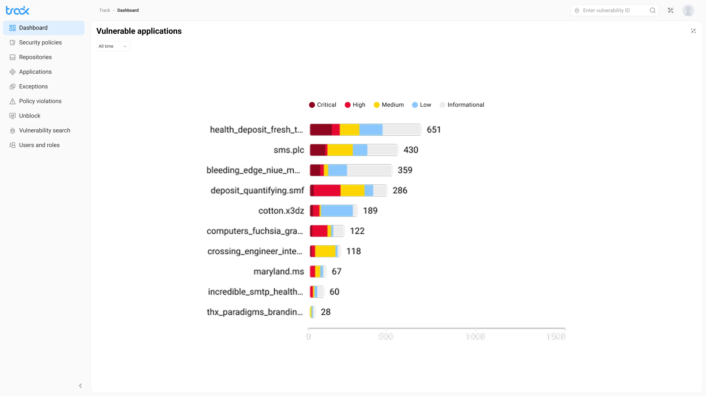
Before AfterThe detailed view is now a place to work. Filters come with you from the dashboard, and the table answers the three questions an AppSec engineer asks first: is it being exploited, is there a fix, and who owns the app. From here you can export the list, share a link or generate a remediation plan.
05 · New in 2.0
What the first version didn’t have
Layout editing. Drag a widget by its handle and resize it from the corner, with a grid hint. A shared dashboard warns you that the whole team will see your changes, so nobody breaks it for their colleagues by accident.
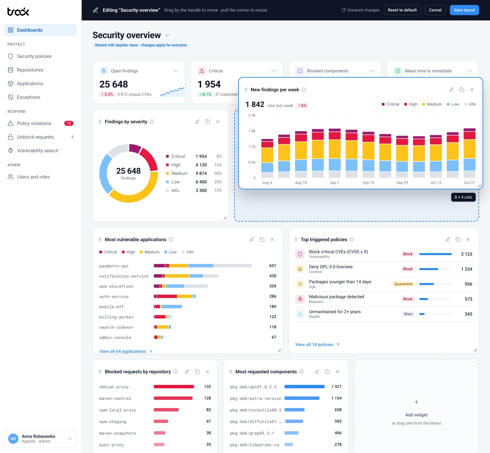
Widget settings with a live preview. You change the chart type, period, top N and severity in a side panel and see the result right away. The dashboard stays where it is.
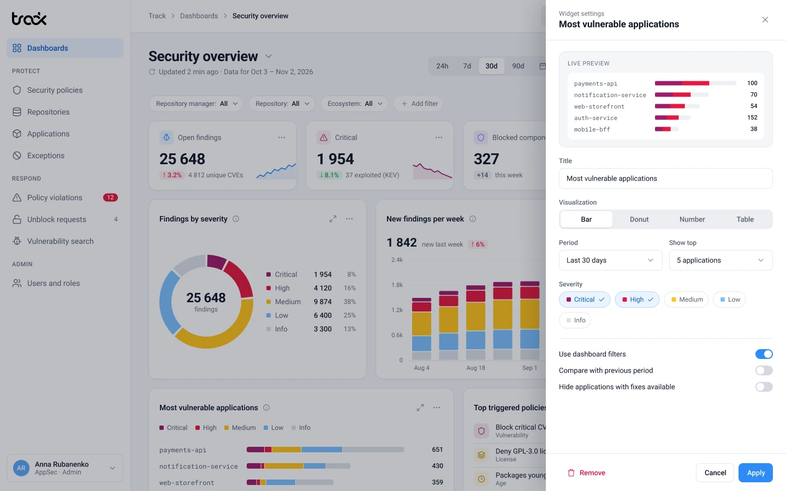
States and overlays. Every widget handles loading, empty data, a failed source and missing permissions the same way, and always offers a next step. If one source fails, the rest of the dashboard keeps working.
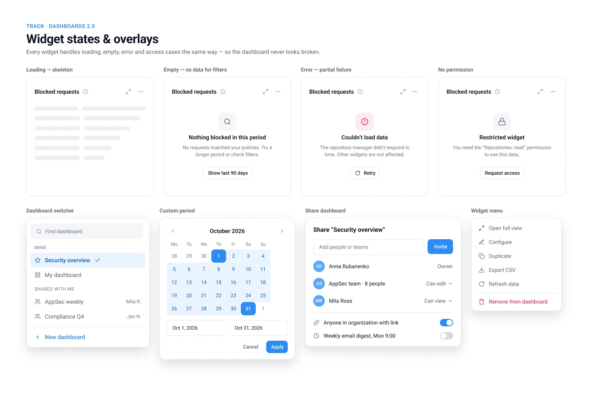
Result
- Under 10 seconds to a useful dashboard instead of about a minute. A role template replaces picking widgets one by one.
- Exploited vulnerabilities on the first screen. Before, there was no way to see them on the dashboard at all.
- 1 click from a chart to the list of things to fix, with filters carried over. Before, you had to go to another section and set the filters again.
- 1 set of filters instead of 6. All widgets now show the same period and scope.
- 4 widget states designed: loading, empty, error and no permission. Before, there were none.
After launch I’d keep an eye on two numbers: the share of exploited vulnerabilities fixed within the SLA, and how often people go from a widget into the details. They show whether the dashboard actually leads to fixes.
What I learned
Letting everyone build their own view solves “we all need different things”, but not “what do I do next?”. In a security product, a dashboard earns its place when it separates real risk from noise and gets you to the fix in one click.